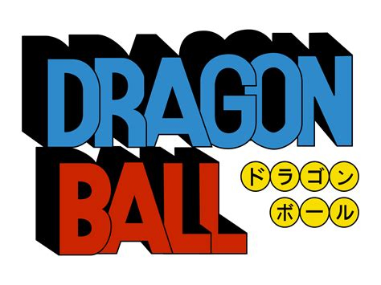
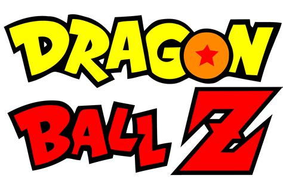

Dragon ball
- oolong desejou uma calcinha da bulma.
- Goku desejou que bura, o índio que foi morto por Tao pai pai revívesse.
- piccolo Daimaoh desejou voltar a ter seu poder total.
- Kuririn, Mestre Kame, Chaoz são revividos depois da luta contra piccolo Daimaoh.

Dragon ball Z
- Goku é revivido para lutar contra os sayadins.
- Dende desejou que piccolo fosse para Namekusei.
- Sr.popo desejou que todas as pessoas mortas por Freeza voltassem a vida.
- Dende deseja que todos que estavam em Namekusei,menos Goku e Freeza voltassem pra Terra.
- Um novo planeta para os Namekusei-jins.
- Tenshinham, Chaoz Yamcha e Kuririn são revividos
- Goku deseja que todos os motos por Cell ressussitem, antes do jogo de Cell.
- Trunks é revivido depois da luta com Cell.
- Kuririn deseja que a #18 se torne humana e que a bomba que ela possuia em seu corpo fosse retirada.
- É desejado que a Terra voltasse a existir e reviver os mortos depois da luta contra boo.